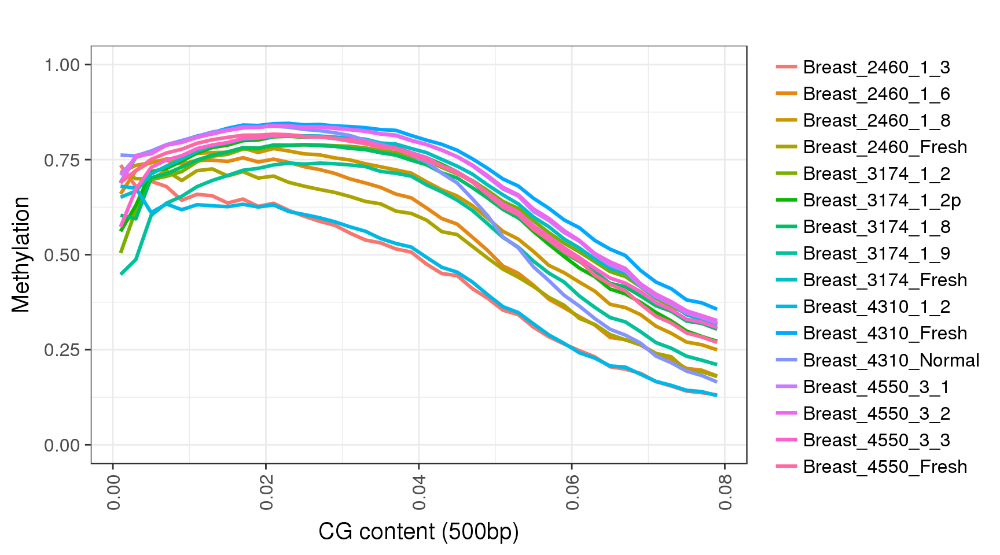
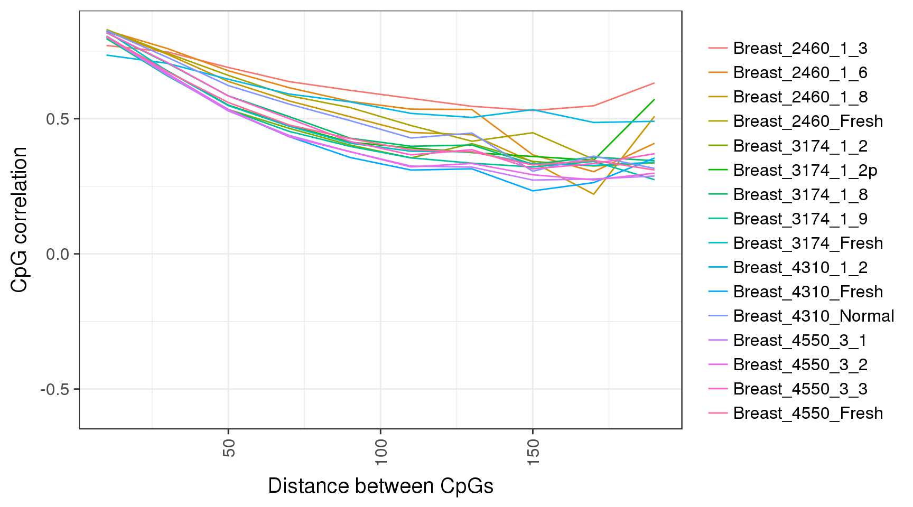

Basic analysis workflow
Aviezer Lifshitz
2017-06-18
IMPORTANT: THIS IS A SANDBOX OF THE ANALYTICAL PIPELINE. IT IS (NOT EVEN) IN BETA STAGE, READ WITH CAUTION AND CONSULT WITH US IF YOU HAVE ANY QUESTIONS. NO GUARANTEES!
The package provides functions to assist analyzing 5mC data. The basic analytic workflow consists of the following steps:
- Single sample analysis:
- global methylation in different contexts (time of replication, spatial distributions in promoters,exons,enhancers)
- CpG correlations
- Epipolymorphism
- Bipolar analysis
- Multiple sample analysis:
- clustering of average methylation in different contexts (promoters, enhancers, polycomb domains)
- annotation of clusters (genes, motifs, other genomic features)
- comparison of pattern distribution in selected loci
- comparison of ‘background’ methylation
Data: UMI-RRBS of Breast and Lung tumors
To explore gpatterns’ functions, we will start with a dataset of UMI-RRBS of breast and lung tumors. The dataset contains 16 breast tumors samples from 4 patients, with multiple sections from each sample.
- (samples table)
After importing the data, we can check that we have all the necessary tracks:
library(gpatterns)
gsetroot('/home/aviezerl/proj/sandbox_db')
options(gmax.data.size=1e09)
tracks <- gpatterns.ls('gpatterns_nugget.Breast_.+_.+')
tracks## [1] "gpatterns_nugget.Breast_2460_1_3"
## [2] "gpatterns_nugget.Breast_2460_1_6"
## [3] "gpatterns_nugget.Breast_2460_1_8"
## [4] "gpatterns_nugget.Breast_2460_Fresh"
## [5] "gpatterns_nugget.Breast_3174_1_2"
## [6] "gpatterns_nugget.Breast_3174_1_2p"
## [7] "gpatterns_nugget.Breast_3174_1_8"
## [8] "gpatterns_nugget.Breast_3174_1_9"
## [9] "gpatterns_nugget.Breast_3174_Fresh"
## [10] "gpatterns_nugget.Breast_4310_1_2"
## [11] "gpatterns_nugget.Breast_4310_Fresh"
## [12] "gpatterns_nugget.Breast_4310_Normal"
## [13] "gpatterns_nugget.Breast_4550_3_1"
## [14] "gpatterns_nugget.Breast_4550_3_2"
## [15] "gpatterns_nugget.Breast_4550_3_3"
## [16] "gpatterns_nugget.Breast_4550_Fresh"And remove the prefix for plotting track names:
names <- gsub('gpatterns_nugget.', '', tracks)
names## [1] "Breast_2460_1_3" "Breast_2460_1_6" "Breast_2460_1_8"
## [4] "Breast_2460_Fresh" "Breast_3174_1_2" "Breast_3174_1_2p"
## [7] "Breast_3174_1_8" "Breast_3174_1_9" "Breast_3174_Fresh"
## [10] "Breast_4310_1_2" "Breast_4310_Fresh" "Breast_4310_Normal"
## [13] "Breast_4550_3_1" "Breast_4550_3_2" "Breast_4550_3_3"
## [16] "Breast_4550_Fresh"Global methylation
The fisrt thing we will to do, is to try and observe the most common feature of methylation data in mammals - low methylation in CpG dense regions and high methylation in regions with low CpG content. We will do that by plotting the average methylation as a function of CpG content (smoothed in 500bp):
trend <- gpatterns.global_meth_trend(tracks, names=names, xlab='CG content (500bp)')the resulting object has 2 fields. ‘trend’ with the data, and ‘p’ with the plot:
trend$trend## # A tibble: 640 × 7
## track name samp
## <chr> <chr> <chr>
## 1 gpatterns_nugget.Breast_2460_1_3 Breast_2460_1_3 Breast_2460_1_3
## 2 gpatterns_nugget.Breast_2460_1_3 Breast_2460_1_3 Breast_2460_1_3
## 3 gpatterns_nugget.Breast_2460_1_3 Breast_2460_1_3 Breast_2460_1_3
## 4 gpatterns_nugget.Breast_2460_1_3 Breast_2460_1_3 Breast_2460_1_3
## 5 gpatterns_nugget.Breast_2460_1_3 Breast_2460_1_3 Breast_2460_1_3
## 6 gpatterns_nugget.Breast_2460_1_3 Breast_2460_1_3 Breast_2460_1_3
## 7 gpatterns_nugget.Breast_2460_1_3 Breast_2460_1_3 Breast_2460_1_3
## 8 gpatterns_nugget.Breast_2460_1_3 Breast_2460_1_3 Breast_2460_1_3
## 9 gpatterns_nugget.Breast_2460_1_3 Breast_2460_1_3 Breast_2460_1_3
## 10 gpatterns_nugget.Breast_2460_1_3 Breast_2460_1_3 Breast_2460_1_3
## breaks meth breaks_numeric cg_num
## <chr> <dbl> <dbl> <dbl>
## 1 [0, 0.002] 0.7356322 0.001 330
## 2 (0.002, 0.004] 0.6792340 0.003 1490
## 3 (0.004, 0.006] 0.6930049 0.005 3491
## 4 (0.006, 0.008] 0.6791553 0.007 6188
## 5 (0.008, 0.01] 0.6431006 0.009 9658
## 6 (0.01, 0.012] 0.6587487 0.011 13855
## 7 (0.012, 0.014] 0.6547867 0.013 18358
## 8 (0.014, 0.016] 0.6359075 0.015 22968
## 9 (0.016, 0.018] 0.6462722 0.017 27780
## 10 (0.018, 0.02] 0.6270250 0.019 31500
## # ... with 630 more rowstrend$p
Next, we will look at average methylation in different genomic contexts:
Correlations between CpGs
trend <- gpatterns.plot_cg_cor(tracks, names=names, adjacent=TRUE, dist_breaks = seq(0,200,20), min_cgs=100)
trend$p
We can repeat that in different genomic contexts as well:
trend <- gpatterns.plot_cg_cor(tracks, names=names, adjacent=TRUE, dist_breaks = seq(0,200,20), min_cgs=100, intervals='cgi')
trend$p
Epipolymorphism
In order to calculate epipolymorphism we first need to define the CpG scope, or ‘pattern space’ and create the patterns attributes of our tracks, see import vignette for details. Assuming we defined a pattern space and created generated patterns for our tracks, we can plot epipolymorphism for different methylation regimes and genomic scopes:
gpatterns.epipoly_plot(tracks[c(1,5,13)], gintervals.all(), colnames=names[c(1,5,13)])
And again, in different genomic contexts:
gpatterns.epipoly_plot(tracks[c(1,5,13)], intervals='tss', colnames=names[c(1,5,13)])
Clustering
First step for multiple sample analysis is to retrieve the methylation calls in a joined set of CpGs. gpatterns provides a function for that purpose. Given genomic regions gpatterns.get_avg_meth screens for the places that have enough coverage (min_cov) in enough samples (min_samples), and extracts methylation calls in those regions. In addition, there is an options to screen for the most variable regions (var_quantile and min_var), and for minimal number of CpGs per region (min_cpgs). If no iterator is given the function uses CpGs is the given intervals.
Let’s extract the 10% most variable CpGs that have at least 20 methylation calls in at least 15 samples:
avgs <- gpatterns.get_avg_meth(tracks=tracks, intervals='intervs.msp1.fid', var_quantile=0.1, names=names, min_cov=20, min_samples=15)
avgsNow we can cluster the average methylation using kmeans++:
clust <- gpatterns.cluster_avg_meth(avgs, K=10)
clustAnd plot the clustering: